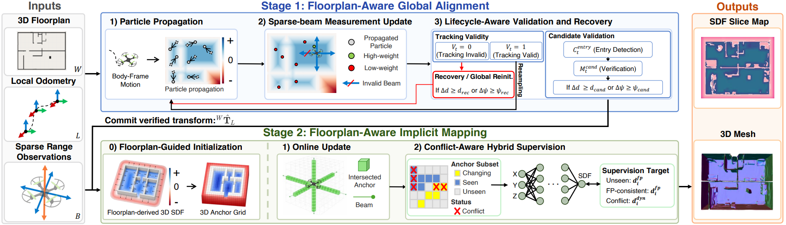
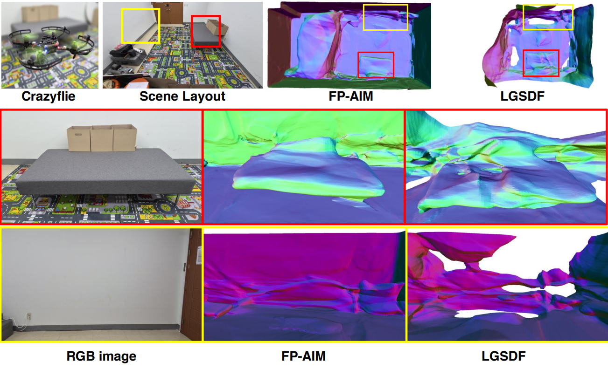
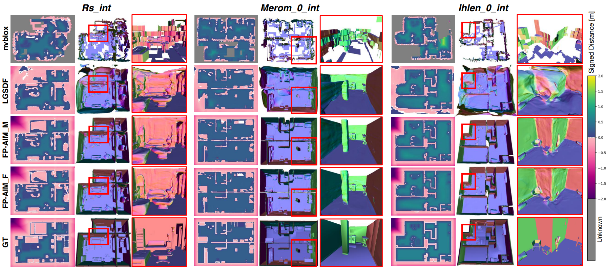

Floorplan-aware reconstruction under sparse onboard range sensing: a 3D floorplan serves as a structural reference for both global alignment and implicit SDF mapping.
Paper under double-anonymous review
Micro-quadrotors are well-suited for confined indoor environments, but their strict payload constraints often limit onboard perception to sparse range sensing and onboard odometry. Sparse range returns provide limited geometric evidence, making structural consistency difficult to maintain from onboard measurements alone. Architectural floorplans provide global structure, but using them for mapping requires aligning the local odometry frame to the floorplan and adapting to observed local deviations from the planned structure.
We present FP-AIM, a floorplan-aware framework that uses a 3D floorplan as a shared structural reference for sparse-range local-to-world alignment and continual implicit SDF mapping. The alignment stage estimates the local-to-world transform using a particle filter over a 2D floorplan SDF, combining sparse-beam likelihoods with candidate verification and recovery. The mapping stage warm-starts an SDF field from a floorplan-derived 3D SDF and updates it online with conflict-aware supervision, preserving floorplan-consistent structure while incorporating locally observed geometry that is not represented in the floorplan.
Experiments demonstrate improved alignment reliability and reconstruction quality in simulation, while a qualitative real-world deployment shows coherent reconstruction under sparse range sensing.
Index Terms — Micro-quadrotor, Sparse Range Sensing, Floorplan, Global Alignment, Implicit Mapping



The source code will be released publicly upon acceptance. The repository link will be added here in the camera-ready version.
% Citation withheld during double-anonymous review. % The BibTeX entry will be added in the camera-ready version.